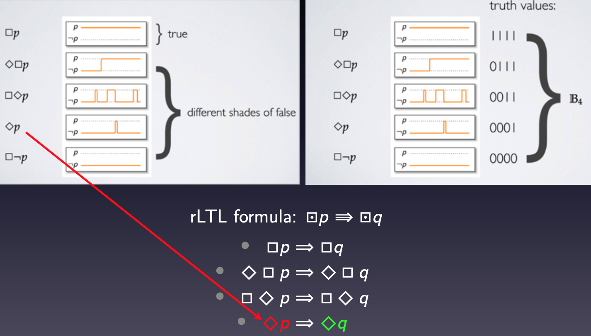

Tzanis Anevlavis
Email / CV / LinkedIn / Google Scholar / Github

|
Hello stranger!I am currently an Applied Scientist at Amazon working on safe motion planning and controls for Amazon Scout, a ground robot for autonomous delivery. Prior to that, I obtained my 5-year Diploma (M.Sc. equivalent) from the School of Electrical and Computer Engineering of the National Technical University of Athens in 2015, with a Major in Signals, Control Systems, and Robotics. Before joining Amazon, I worked on my Ph.D. degree in Electrical and Computer Engineering at UCLA, under the supervision of Prof. Paulo Tabuada. My Ph.D. research revolved around cyber-physical systems on the modern side of control theory: safety-critical control with theoretical guarantees and robustness in formal verification. This work has led to novel algorithms for online computations of (implicit) robust controlled invariant sets utilized in system safety and efficient model-checking algorithms for verification using the recently developed logic rLTL. Other research interests include learning and optimization, and more recently computer vision with deep learning. Prior to this, I obtained my Diploma (M.Sc. equivalent) from the School of Electrical and Computer Engineering of the National Technical University of Athens in 2015, with a Major in Signals, Control Systems, and Robotics. For my thesis, I worked with Prof. George Papavassilopoulos on differential games for debt stabilization. |
ResearchBelow are some of my favorite research projects. For a complete list of publications refer to my publications page or my Google Scholar profile. |

|
Safety-critical control via robust controlled invariant setsControlled invariant sets: implicit closed-form representations and applicationsTzanis Anevlavis, Zexiang Liu, Necmiye Ozay, and Paulo Tabuada IEEE Transactions on Automatic Control, 2024 arXiv preprint / Github Repo / Video A safety enforcing controller should indefinitely keep the state of the system within a set of safe states. One way to achieve this is by initializing the state of the system inside a (Robust) Controlled Invariant Sets (RCIS) within the set of safe states as starting any trajectory in an RCIS allows one to force it to remain there. In this work, we propose a novel algorithm to compute an implicit representation of an RCIS in the space of states and control inputs in closed-form. This representation can be readily used for solving safety-critical control problems, such as the supervisory control problem, where a nominal input is corrected if it is considered unsafe. The closed-form expression allows the computation of different implicit RCISs online, e.g., for dynamic settings where the safe set changes. I also developed a MATLAB and C++ library found this repo, which was tested on the obstacle-avoidance problem for quadrotors. |
|  |
rLTL: Formally reasoning about correctness and robustness in verificationBeing Correct Is Not Enough: Efficient Verification Using Robust Linear Temporal LogicTzanis Anevlavis, Matthew Philippe, Daniel Neider, Paulo Tabuada ACM Transactions on Computational Logic, 2022 Github Repo While most approaches in formal methods address system correctness, ensuring robustness has remained a challenge. The logic rLTL provides a means to formally reason about both correctness and robustness in system design. As a multi-valued logic it augments the classic LTL in terms of expressiveness, the ability to describe robustness, and the fine-grained information it brings to the process of system verification. My work was focused on making verification using rLTL accessible, so that the advantages of this logic can be practical. First, I identified a large fragment of rLTL for which the complexity of verifying an rLTL formula φ is at most O(3^|φ|), where |φ| is the length of φ. This result improves the previously known bound of O(5^|φ^|) is closer to the LTL bound of O(2^|φ|). Secondly, I developed the first rLTL model-checking software, Evrostos, which can be found in this repo. Case studies with Evrostos show that the advantages of rLTL come at a low computational overhead with respect to LTL verification. |
|
More details about my research and the projects I work on are found in my projects page. |